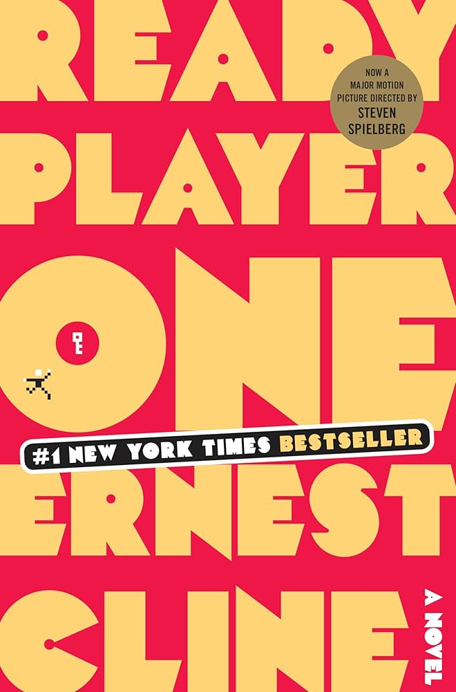

July 5, 2022
9-12
Fantasy
Harry Potter

Harry Potter and the Sorcerer's Stone is an enchanting introduction to J.K. Rowling's magical world, where young Harry discovers he's a wizard and embarks on a journey filled with wonder, friendship, and danger. The book masterfully blends fantasy, mystery, and coming-of-age elements as Harry navigates life at Hogwarts School of Witchcraft and Wizardry, learns about his parents' tragic past, and faces the dark threat of Lord Voldemort. With vivid characters and imaginative settings, it captures readers of all ages, laying the foundation for an epic series.
September 15, 2024
10-14
Fantasy
Ready Player One
Ready Player One by Ernest Cline is a thrilling, nostalgia-packed adventure set in a dystopian future where most people escape reality through the virtual world of the OASIS. The story follows Wade Watts, a teenager who embarks on a high-stakes quest to find a hidden fortune left by the OASIS's creator. The book is filled with '80s pop culture references, video game lore, and puzzles, making it a delight for geeks and gamers. While fast-paced and imaginative, the book also explores themes of identity, escapism, and the consequences of living too much in virtual worlds.